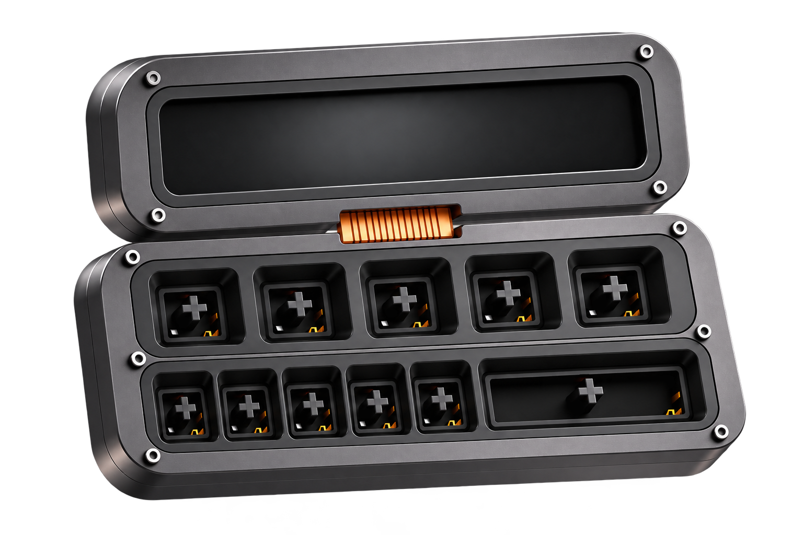

Hi, I'm Mohsin
Software engineer building backend systems on Azure and .NET, and open-source tools for LLM apps.

Mohsin's portfolio
Backend systems. Cloud pipelines. Tools for LLM apps.
Say hello.
Have a role, a project or a question? Email is the fastest way to reach me.